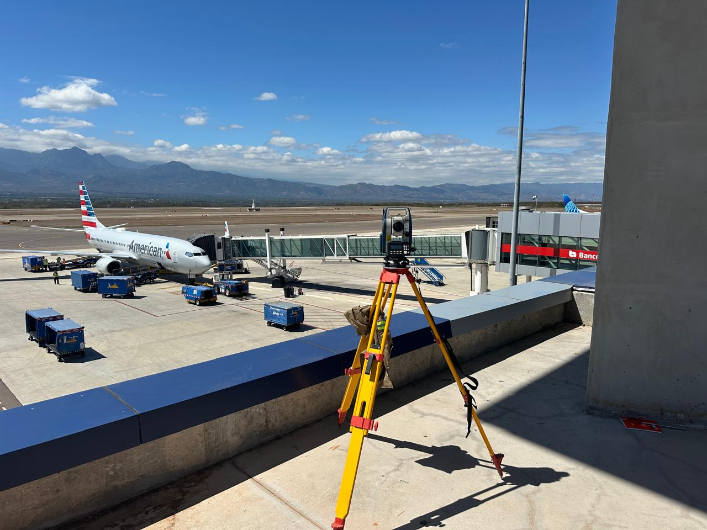
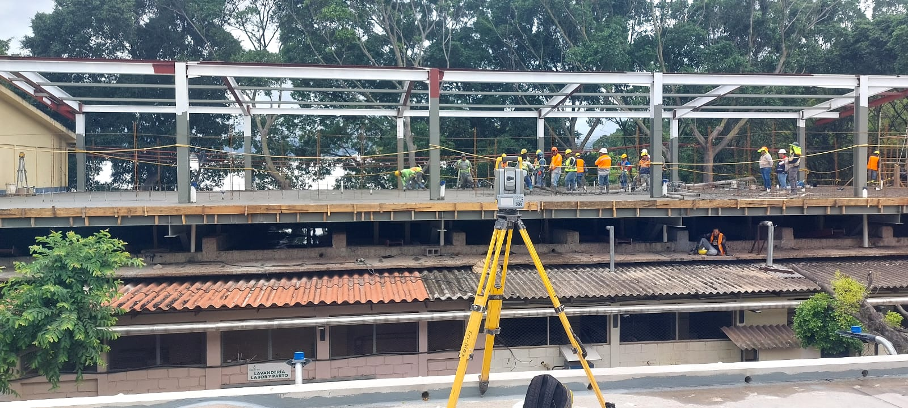
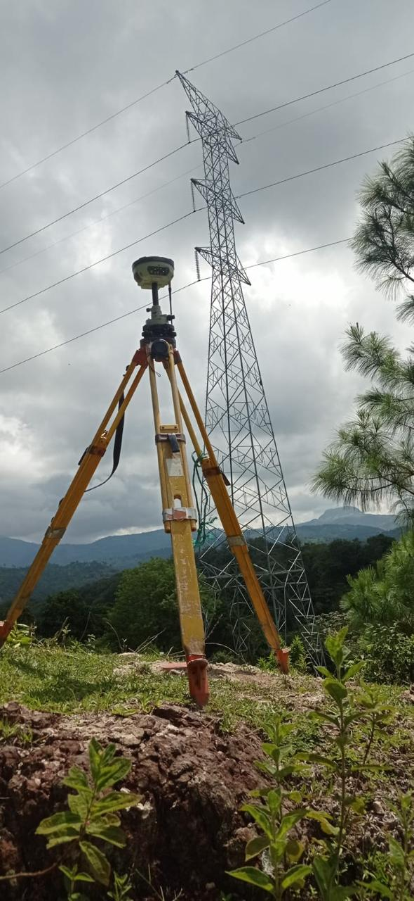
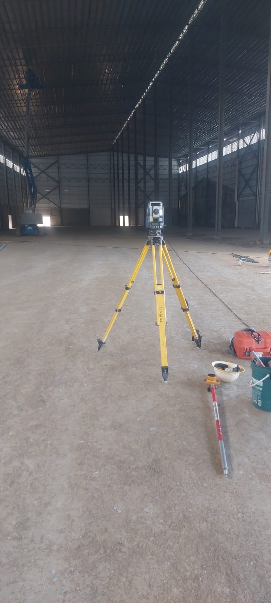

Obra y construcción


Topografía HYC
Trabajo en campo
Apoyamos proyectos en campo abierto, obras en ejecución, plataformas, estructuras, áreas rurales y zonas urbanas.
Solicitar informaciónAplicaciones
Aplicamos la información de campo para ordenar decisiones antes y durante la ejecución.



Entregables
Cotizá tu levantamiento
Escribinos y contanos la ubicación general, tamaño aproximado y objetivo del trabajo.